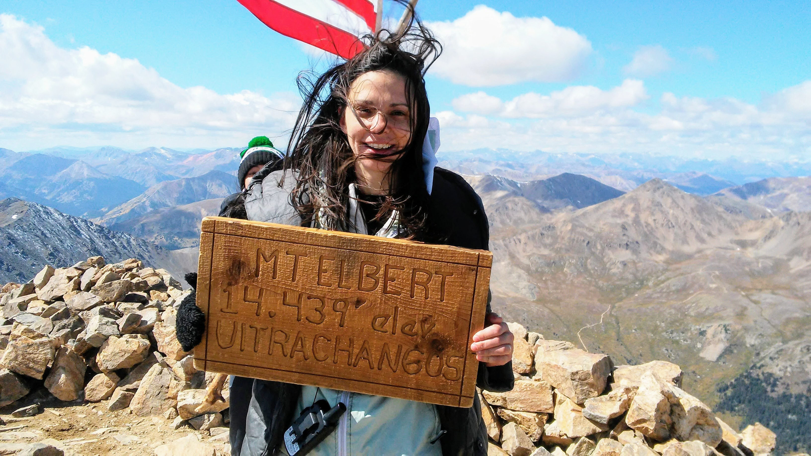
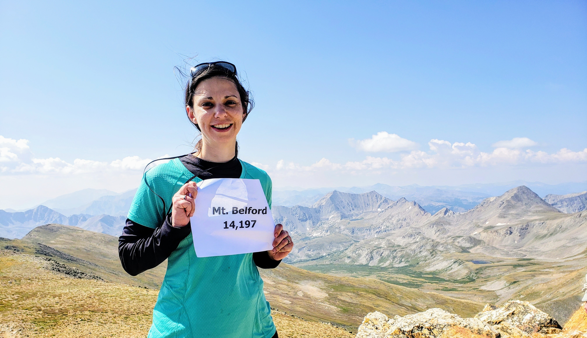
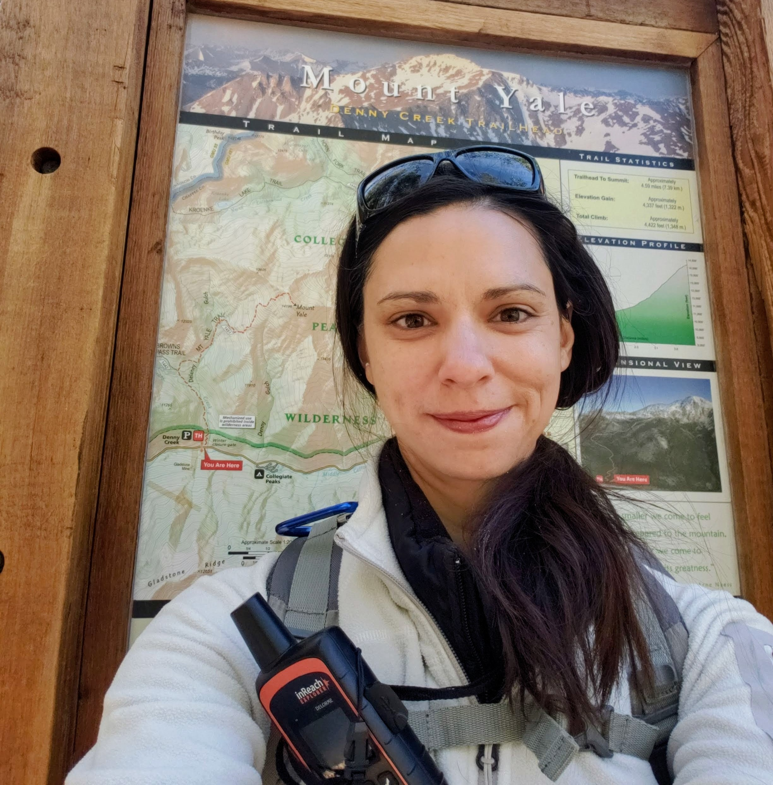

Resources for Trip Planning
Safety First
I learned the hard way that over-confidence is the best way to get into trouble. Every trail demands respect regardless of difficulty rating.
Essential Gear
Jessica recommends starting every trip plan on AllTrails for current trail conditions and user reviews.
What Jessica Likes
AllTrails Contributions
Active contributor documenting Colorado, Utah, and New Mexico trails. Check out her contributions on AllTrails.
Why She Hikes
Hiking became a way to decompress and get away from people. Being out on the trails reminds me to experience the little beautiful imperfections in life.


Stay Safe Out There
Safety Gear:
- GPS with emergency beacon
- Weather-appropriate layers
- First aid kit
- Extra water and snacks
Jessica recommends REI for gear selection and trail safety guides.